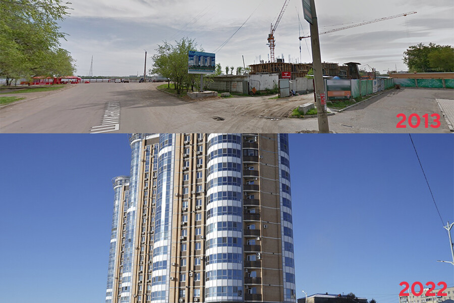
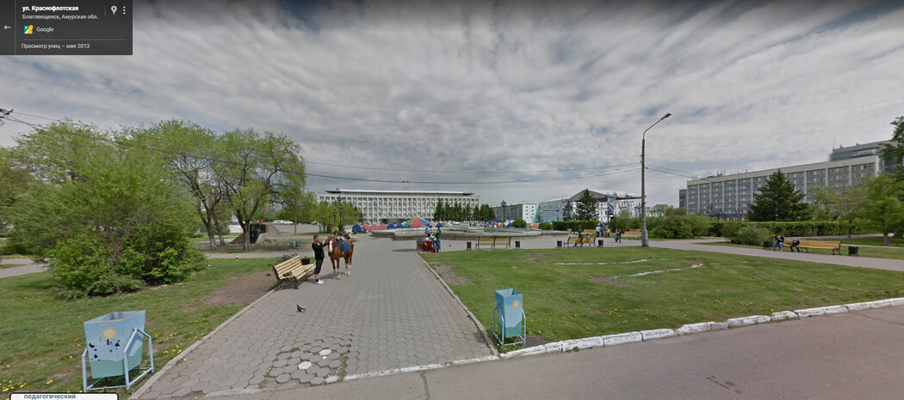
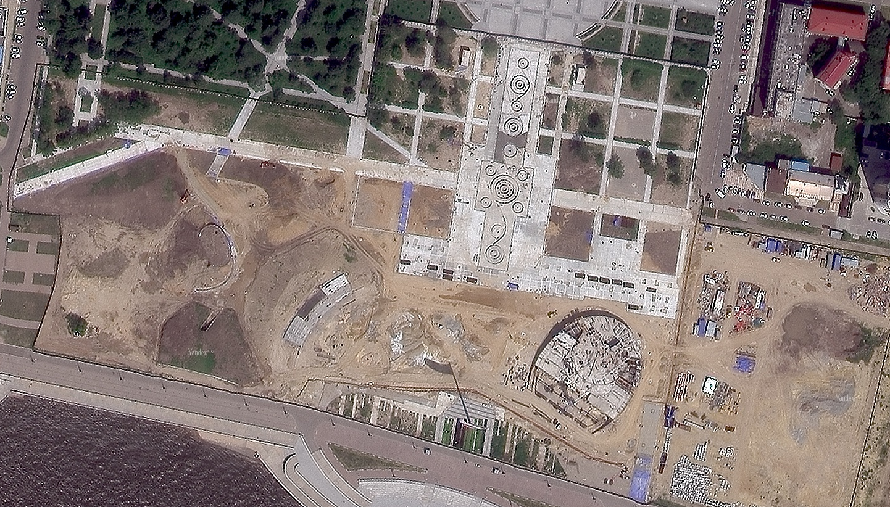
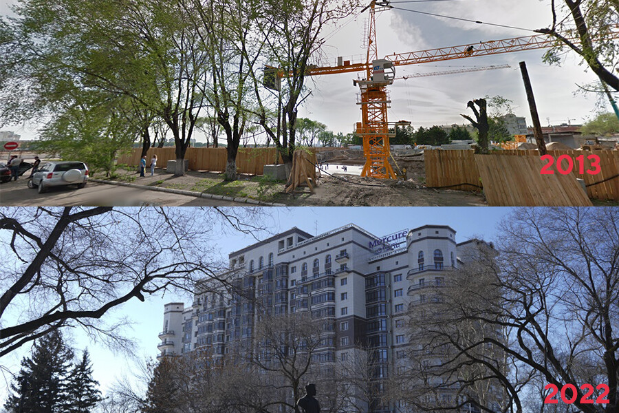
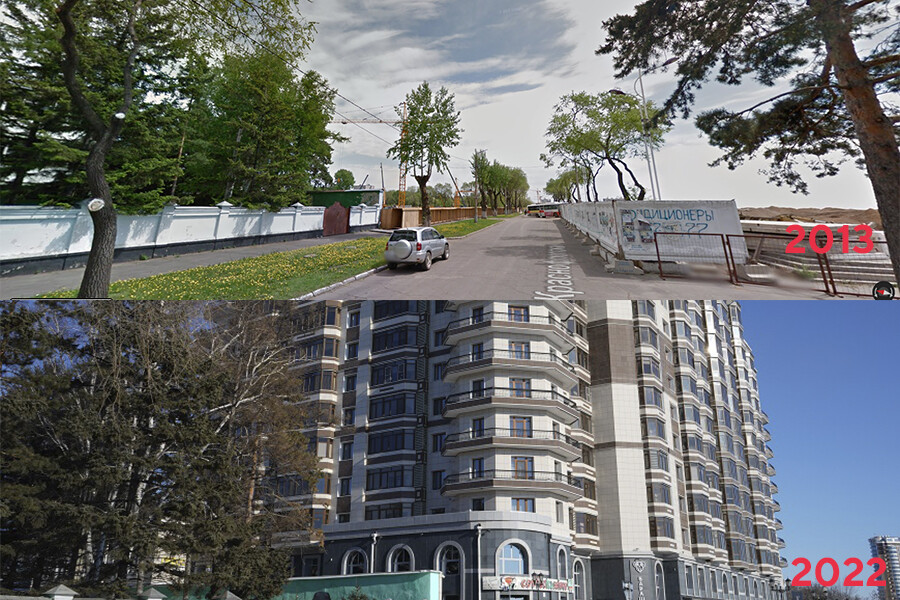
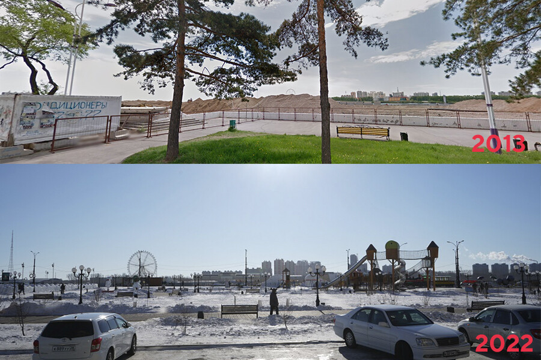
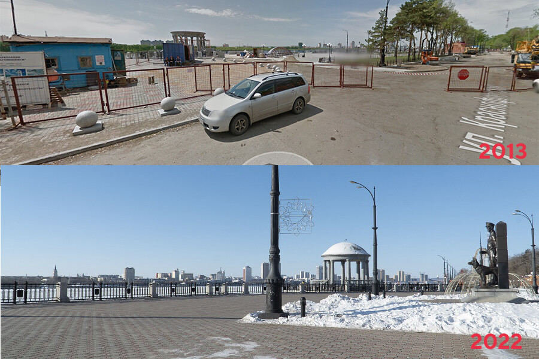
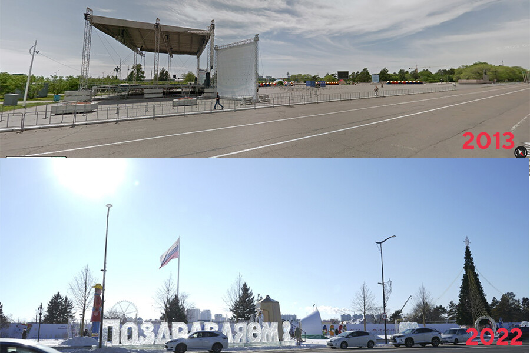
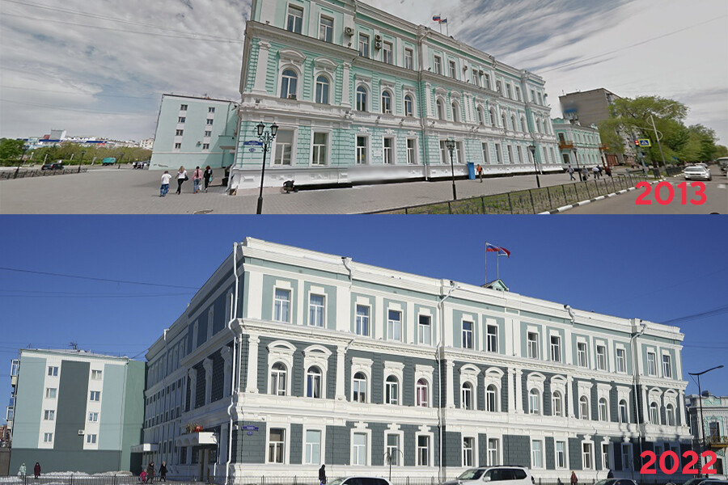

Как менялся современный Благовещенск
Начнем прогулку от домов по адресу: Краснофлотская, 123. В 2013 началась стройка:
Площадь Ленина, вполне получится увидеть лишь в 2013 году, так как в настоящее время это пространство огорожено забором и подойти к фонтану возможности нет.
Сейчас можно лишь глядеть на снимки из космоса:
А вот так Пионерская, 2, выглядела в 2013 и сейчас:
С другой стороны картина также изменилась:
А так выглядела и выглядит нынешняя детская площадка на набережной:
Место где сейчас располагается ротонда. В 2013 году ротонда уже начала строиться, а к 2022 году стала одним из любимейших мест благовещенцев и гостей города:
Вернемся назад, на площадь Ленина. Так она выглядела в 2013 с другой стороны, а после ее сегодняшний вид, во время реконструкции:
Ну и напоследок посмотрим, как изменилось здание администрации Благовещенска:
Фото и другиe материалы: AMUR LIFE